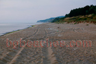
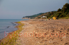
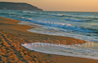
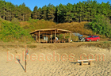
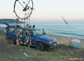
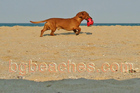
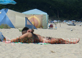
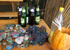
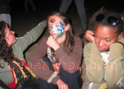

Kara Dere (Karadere)
The best beach for primitive camping. It is free without any regulations. It is hardly accessible via a wild area with bad roads. * Locate Karadere here.
Hut
Dolphins
Dolphin- 
End of June
End of June 2
Karadere6574
Karadare Sunrize- 
Towards Byala
Sands
Cart- 
Post-card
Gale
High waves
Art
Two paths- 
Bar Chambao
Fisherman's boat
Panorama- 
Woods for the fire
Jana
Postcard- 
Dog
Fire in front of the bar
Jump
At fire
Tents
Spring
Eco
Gull- 
Nude
Another view of the fire
Another view of the beach
Shower
Trash
The woods- 
The tables in Bar Chambao
Chillout
Eco coctail
Love- 
Diversity
A child sleeping at the fire
After party
Hotel
Tents in the woods
Contrast
Children
Sailing boat